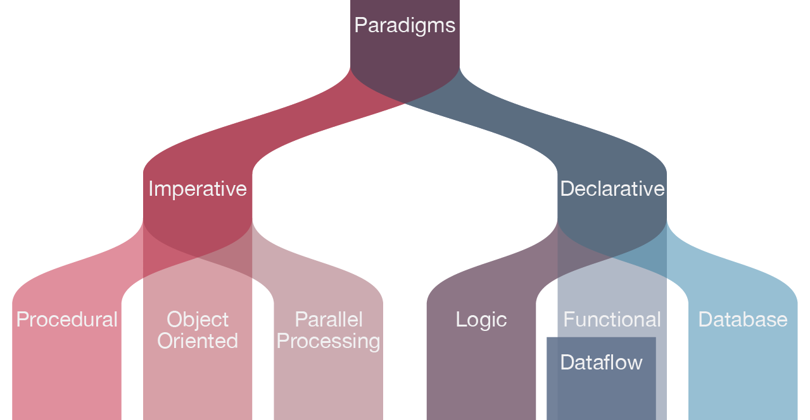

Types of Programming Languages
- Procedural Programming Language.
- Functional Programming Language.
- Object-oriented Programming Language.
- Scripting Programming Language.
- Logic Programming Language.
Procedural Programming Language.
The procedural programming language is used to execute a sequence of statements which lead to a end result. normally, this kind of programming language makes use of multiple variables, heavy loops and other factors, which separates them from functional programming languages. capabilities of procedural language may additionally control variables, aside from feature’s price returns. as an instance, printing out facts.
Functional Programming Language.
Practical programming languageNormally uses stored statistics, frequently avoiding loops in want of recursive features.the practical programing’s primary attention is on the return values of features, and aspect outcomes and extraordinary shows that storing country are powerfully discouraged. as an instance, in an exceedingly pure useful language, if a feature is termed, it’s predicted that the feature no longer modify or carry out any o/p. it can, however, construct algorithmic calls and regulate the parameters of these calls. practical languagesAre normally easier and build it less difficult to figure on abstract troubles, however, they’ll even be “further from the gadget” therein their programming version makes it difficult to understand precisely, but the code is decoded into machine language (which are frequently intricate for device programming).
Object-oriented Programming Language.
This programming language perspectives the world as a group of gadgets that have inner facts and external accessing parts of that facts. the purpose this programming language isTo consider the fault by means of setting apart it into a collection of objects that offer offerings which can be used to remedy a particular problem. one of the foremost principle of item orientated programming language is encapsulation that the whole thing an item will want need to be inner of the object. this language additionally emphasizes reusability thru inheritance and the ability to spread present day implementations while not having to change a first rate deal of code via using polymorphism.
Scripting Programming Language.
Those programming languages are frequently procedural and can comprise object-orientated language factors, however they fall into their very own category as they're generally now not full-fledged programming languages with support for improvement of large systems. for instance, they may now not have bring together-time kind checking. commonly, those languages require tiny syntax to get began.
Logic Programming Language.
These sorts of languages permit programmers make declarative statements and then permit the gadgetTo purpose about the consequences of those statements. in a experience, this language doesn’t inform the pc the way to do some thing, however employing regulations on what it have to don't forget doing.
To call these agencies ” sorts of language ” is honestly a chunk complicated. it’s smooth to program in an item-oriented fashion in c program languageperiod. in truth, most of the languages include thoughts and features from numerous domain names, which simplest allows to increase the usefulness of these types of languages. although, maximum ofThe programming languages do now not high-quality in all sorts of programming

Links